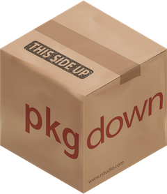

# if not already installed
install.packages("pkgdown")Share a package
NotePackages used in this module
install.packages(c("covr", "devtools", "dplyr", "usethis"))Having a package is cool but it’s much less useful if you keep it for you1.
There are two main, non-exclusive ways to share your package to the world:
- put it on Github
- put it on CRAN
Github
Git and Github are useful tools for code sharing, which means they’re perfect to share an R package.
This is not a Git tutorial, I’ll “just” show how to connect Git and Github to RStudio.
If this is already done, skip the next two slides.
Download and install Git.
-
Connect Git and RStudio:
in RStudio: Tools > Global Options > Git/SVN > Git executable > Browse > Find your installation of Git
it should probably be similar to mine: “C:/Users/etienne/AppData/Local/Programs/Git/bin”
If necessary, create an account on Github.
In RStudio, run
usethis::use_git_config(user.name = "<YOUR NAME>", user.email = "<YOUR EMAIL>")2Now you need a token that will be stored in RStudio so that Github knows that RStudio has the right to push code to your repositories. You can create one with
usethis::create_github_token()(you can also change the expiration date).Generate the token and store it in RStudio with
gitcreds::gitcreds_set().Restart RStudio.
Doesn’t work? More info at Happy Git with R.
CRAN
CRAN
Comprehensive R Archive Network
Where packages are stored (around 20,000 packages currently).
Put a package on CRAN:
- Pros:
- More visibility
- Package is tested before being uploaded
- Package is tested with new versions of R or with new versions of its dependencies
- Cons:
- Delay to fix a bug in your package can be short (2 weeks)
CRAN has strict rules in terms of formatting or testing, but that shouldn’t worry you:
there are some collaborative todo lists before submitting to CRAN, such as this one
there are a lot of packages to make your life easier (urlchecker, spelling, etc.)
Website
We could stop here, but we can add something more: a website!
And no, it won’t (or rather shouldn’t) take long.
We’re going to use an amazing package to build a package website in a few minutes: pkgdown

Local website
Before putting the website online, we can already create locally with pkgdown::build_site().
This takes care of everything:
- converting documentation
- create links to the Github repository
- create pages for license, authors, etc.
Once you have a website, you can include it in the DESCRIPTION file.
Session info
─ Session info ───────────────────────────────────────────────────────────────
setting value
version R version 4.6.1 (2026-06-24)
os Ubuntu 26.04.1 LTS
system x86_64, linux-gnu
ui X11
language (EN)
collate C.UTF-8
ctype C.UTF-8
tz UTC
date 2026-10-28
pandoc 3.7.0.2 @ /usr/bin/pandoc
quarto 1.10.19 @ /usr/local/bin/quarto
─ Packages ───────────────────────────────────────────────────────────────────
! package * version date (UTC) lib source
askpass 1.2.1 2024-10-04 [1] RSPM
base64enc 0.1-6 2026-02-02 [1] RSPM
brew 1.0-10 2023-12-16 [1] RSPM
brio 1.1.5 2024-04-24 [1] RSPM
bslib 0.12.0 2026-08-04 [1] RSPM
cachem 1.1.0 2024-05-16 [1] RSPM
callr 3.8.0 2026-06-05 [1] RSPM
cli 3.6.6 2026-04-09 [1] RSPM
clipr 0.8.1 2026-05-25 [1] RSPM
commonmark 2.0.0 2025-07-07 [1] RSPM
covr 3.6.5 2025-11-09 [1] RSPM
R cpp11 <NA> <NA> [?] <NA>
crayon 1.5.3 2024-06-20 [1] RSPM
credentials 2.0.3 2025-09-12 [1] RSPM
curl 8.1.0 2026-10-14 [1] RSPM
desc 1.4.3 2023-12-10 [1] RSPM
devtools 2.5.2 2026-04-30 [1] RSPM
diffobj 0.3.9 2026-09-11 [1] RSPM
digest 0.6.39 2025-11-19 [1] RSPM
downlit 0.4.5 2025-11-14 [1] RSPM
dplyr 1.2.1 2026-04-03 [1] RSPM
ellipsis 0.3.3 2026-04-04 [1] RSPM
evaluate 1.0.5 2025-08-27 [1] RSPM
fansi 1.0.7 2025-11-19 [1] RSPM
fastmap 1.2.0 2024-05-15 [1] RSPM
fontawesome 0.5.3 2024-11-16 [1] RSPM
fs 2.1.0 2026-04-18 [1] RSPM
generics 0.1.4 2025-05-09 [1] RSPM
gert 2.5.0 2026-10-14 [1] RSPM
gh 1.6.1 2026-07-20 [1] RSPM
gitcreds 0.1.2 2022-09-08 [1] RSPM
glue 1.8.1 2026-04-17 [1] RSPM
highr 0.12 2026-03-06 [1] RSPM
htmltools 0.5.9 2025-12-04 [1] RSPM
htmlwidgets 1.6.4 2023-12-06 [1] RSPM
httpuv 1.6.17 2026-03-18 [1] RSPM
httr 1.4.9 2026-09-01 [1] RSPM
httr2 1.3.0 2026-07-13 [1] RSPM
ini 0.3.1 2018-05-20 [1] RSPM
jquerylib 0.1.4 2021-04-26 [1] RSPM
jsonlite 2.0.0 2025-03-27 [1] RSPM
knitr 1.52 2026-09-06 [1] RSPM
later 1.4.8 2026-03-05 [1] RSPM
lifecycle 1.0.5 2026-01-08 [1] RSPM
magrittr 2.0.5 2026-04-04 [1] RSPM
memoise 2.0.1 2021-11-26 [1] RSPM
mime 0.13 2025-03-17 [1] RSPM
miniUI 0.1.2 2025-04-17 [1] RSPM
openssl 2.4.2 2026-06-09 [1] RSPM
otel 0.2.0 2025-08-29 [1] RSPM
pak 0.11.1 2026-07-22 [1] RSPM (R 4.6.0)
pillar 1.11.1 2025-09-17 [1] RSPM
pkgbuild 1.4.8 2025-05-26 [1] RSPM
pkgconfig 2.0.3 2019-09-22 [1] RSPM
pkgdown 2.2.1 2026-07-07 [1] RSPM
pkgload 1.5.3 2026-06-15 [1] RSPM
praise 1.0.0 2015-08-11 [1] RSPM
prettyunits 1.2.0 2023-09-24 [1] RSPM
processx 3.9.0 2026-04-22 [1] RSPM
profvis 0.4.0 2024-09-20 [1] RSPM
promises 1.5.0 2025-11-01 [1] RSPM
ps 1.9.3 2026-04-20 [1] RSPM
purrr 1.2.2 2026-04-10 [1] RSPM
R6 2.6.1 2025-02-15 [1] RSPM
ragg 1.5.2 2026-03-23 [1] RSPM
rappdirs 0.3.4 2026-01-17 [1] RSPM
rcmdcheck 1.4.0 2021-09-27 [1] RSPM
Rcpp 1.1.2 2026-07-05 [1] RSPM
rdtools 0.1.0 2026-07-16 [1] RSPM
rex 1.2.2 2026-03-28 [1] RSPM
rlang 1.3.0 2026-07-05 [1] RSPM
rmarkdown 2.32 2026-09-01 [1] RSPM
roxygen2 8.1.1 2026-10-08 [1] RSPM
rprojroot 2.1.1 2025-08-26 [1] RSPM
rstudioapi 0.19.0 2026-06-11 [1] RSPM
rversions 3.0.0 2025-10-09 [1] RSPM
sass 0.4.10 2025-04-11 [1] RSPM
sessioninfo 1.2.4 2026-06-04 [1] RSPM
shiny 1.14.0 2026-06-21 [1] RSPM
sourcetools 0.1.7-2 2026-03-28 [1] RSPM
stringi 1.8.9 2026-08-04 [1] RSPM
sys 3.4.3 2024-10-04 [1] RSPM
systemfonts 1.3.2 2026-03-05 [1] RSPM
testthat 3.3.2 2026-01-11 [1] RSPM
textshaping 1.0.5 2026-03-06 [1] RSPM
tibble 3.3.1 2026-01-11 [1] RSPM
tidyselect 1.2.1 2024-03-11 [1] RSPM
tinytex 0.61 2026-09-17 [1] RSPM
urlchecker 2.0.0 2026-07-08 [1] RSPM
usethis 3.2.2 2026-09-10 [1] RSPM
utf8 1.2.6 2025-06-08 [1] RSPM
vctrs 0.7.3 2026-04-11 [1] RSPM
waldo 0.6.2 2025-07-11 [1] RSPM
whisker 0.4.1 2022-12-05 [1] RSPM
withr 3.0.3 2026-06-19 [1] RSPM
xfun 0.62 2026-10-16 [1] RSPM
xml2 1.6.0 2026-06-22 [1] RSPM
xopen 1.0.1 2024-04-25 [1] RSPM
xtable 1.8-8 2026-02-22 [1] RSPM
yaml 2.3.12 2025-12-10 [1] RSPM
zip 3.0.2 2026-08-04 [1] RSPM
[1] /home/runner/work/_temp/Library
[2] /opt/R/4.6.1/lib/R/library
R ── Package was removed from disk.
──────────────────────────────────────────────────────────────────────────────